← 返回正文11.4 C++ 全局构造与析构
PDF 第 380 页 · 书内第 357 页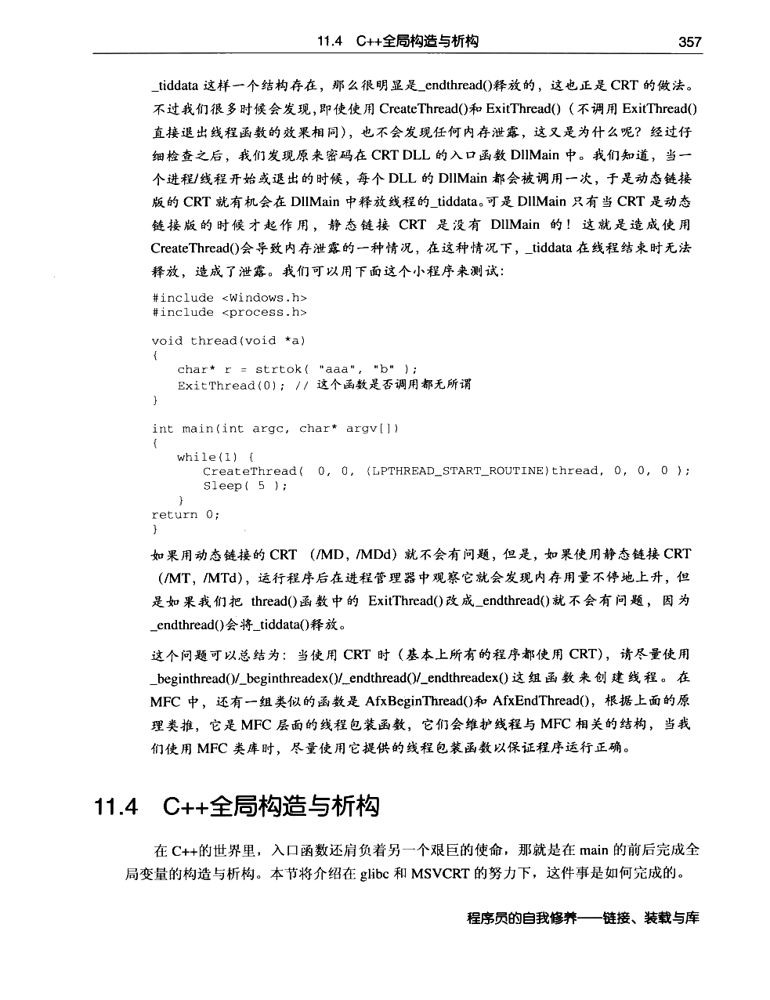
PDF 第 381 页 · 书内第 358 页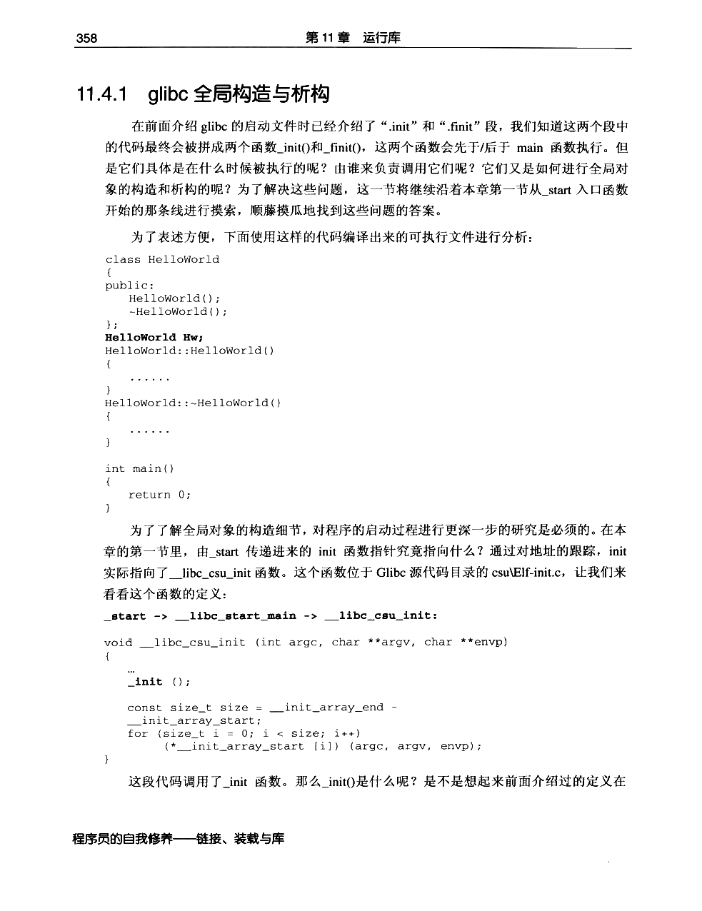
PDF 第 382 页 · 书内第 359 页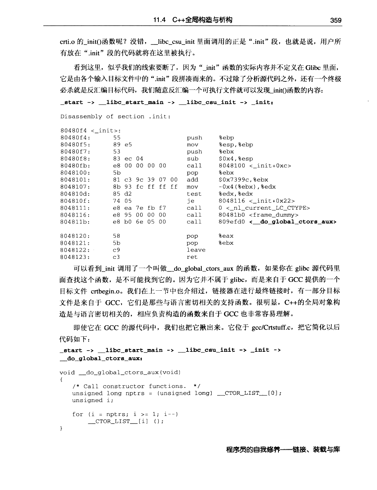
PDF 第 383 页 · 书内第 360 页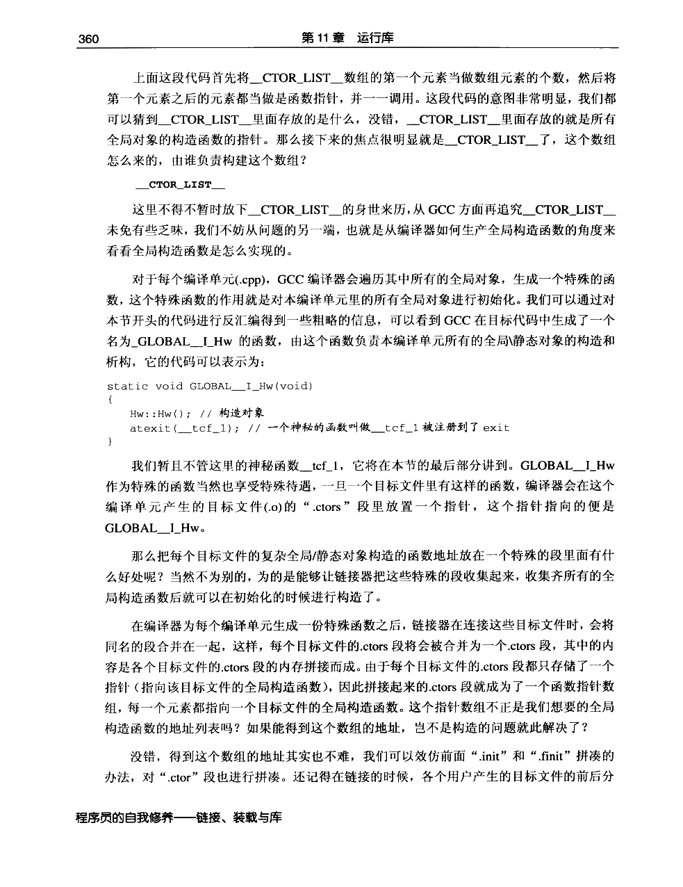
PDF 第 384 页 · 书内第 361 页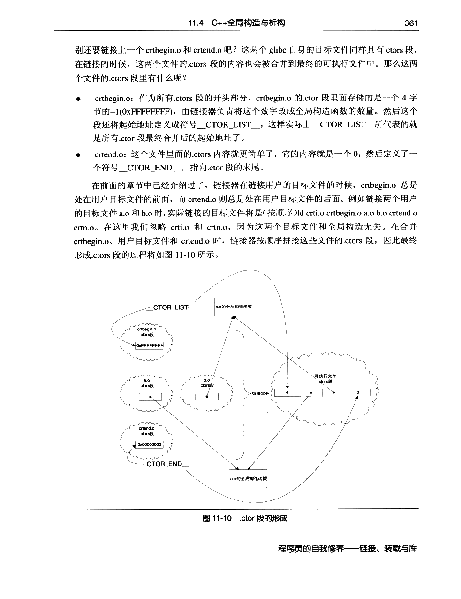
PDF 第 385 页 · 书内第 362 页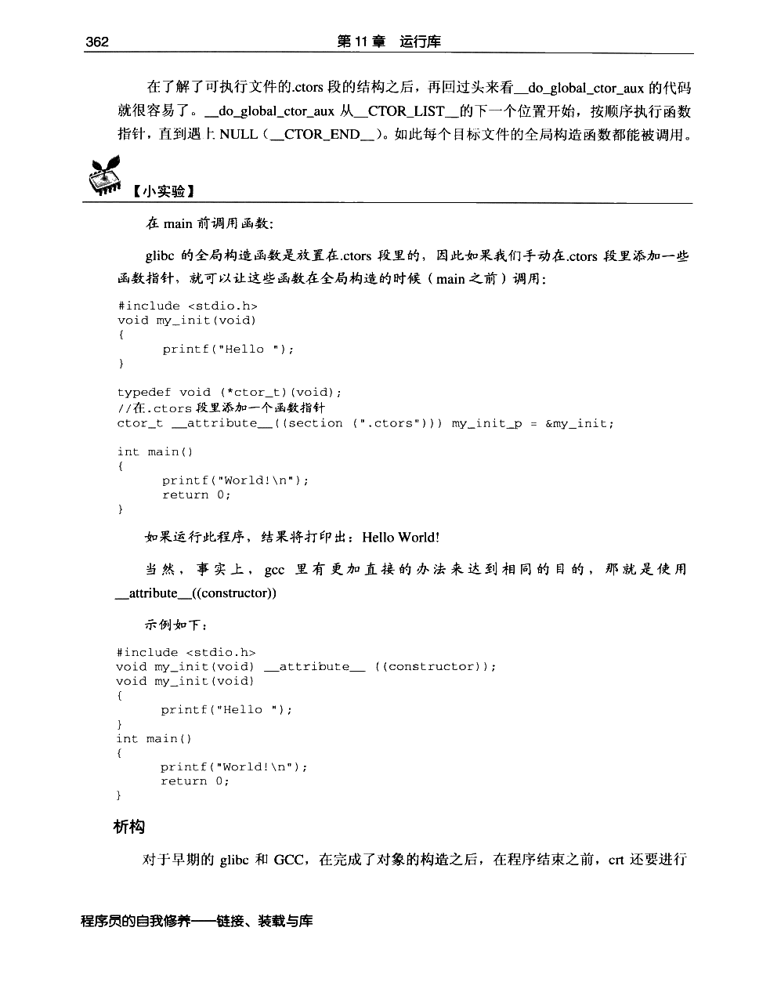
PDF 第 386 页 · 书内第 363 页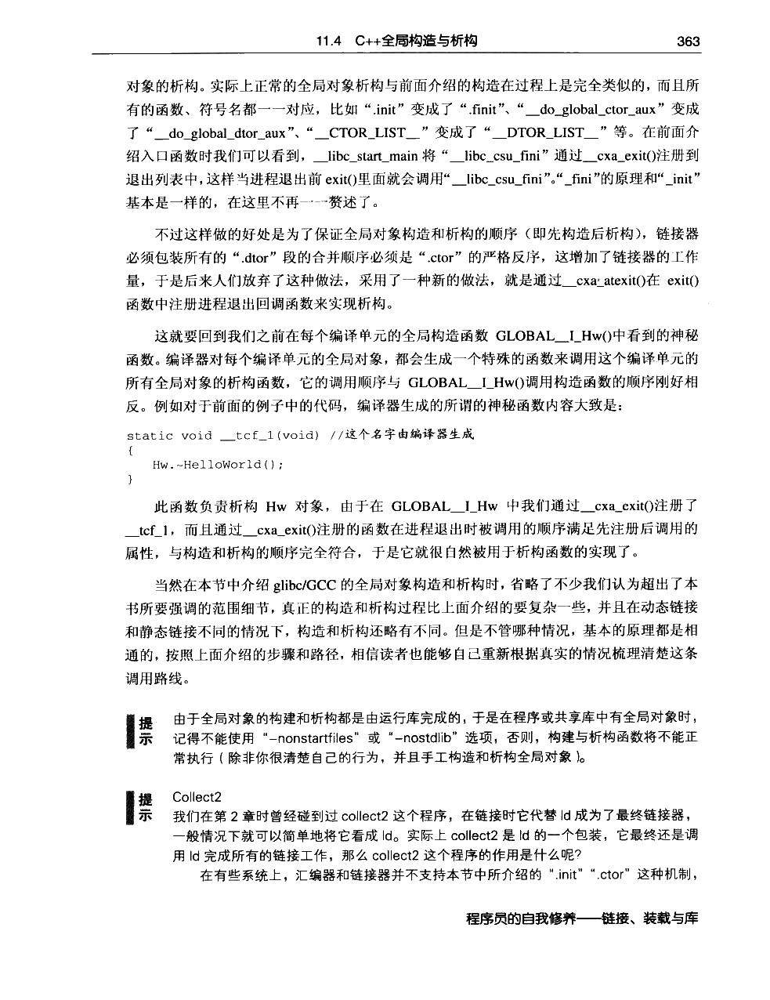
PDF 第 387 页 · 书内第 364 页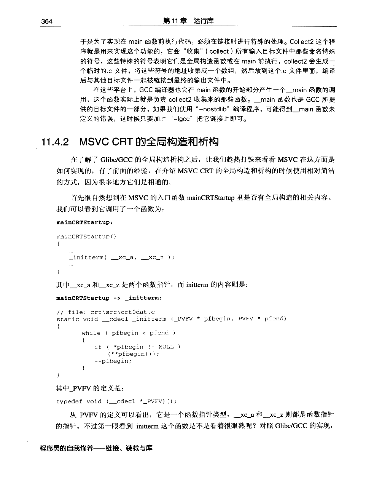
PDF 第 388 页 · 书内第 365 页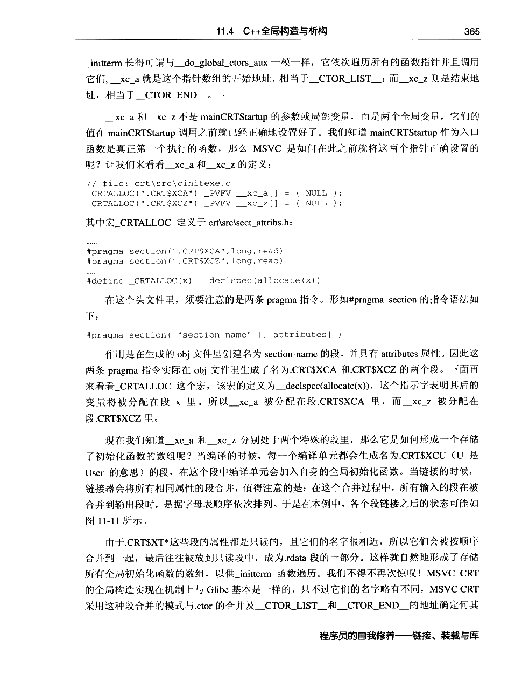
PDF 第 389 页 · 书内第 366 页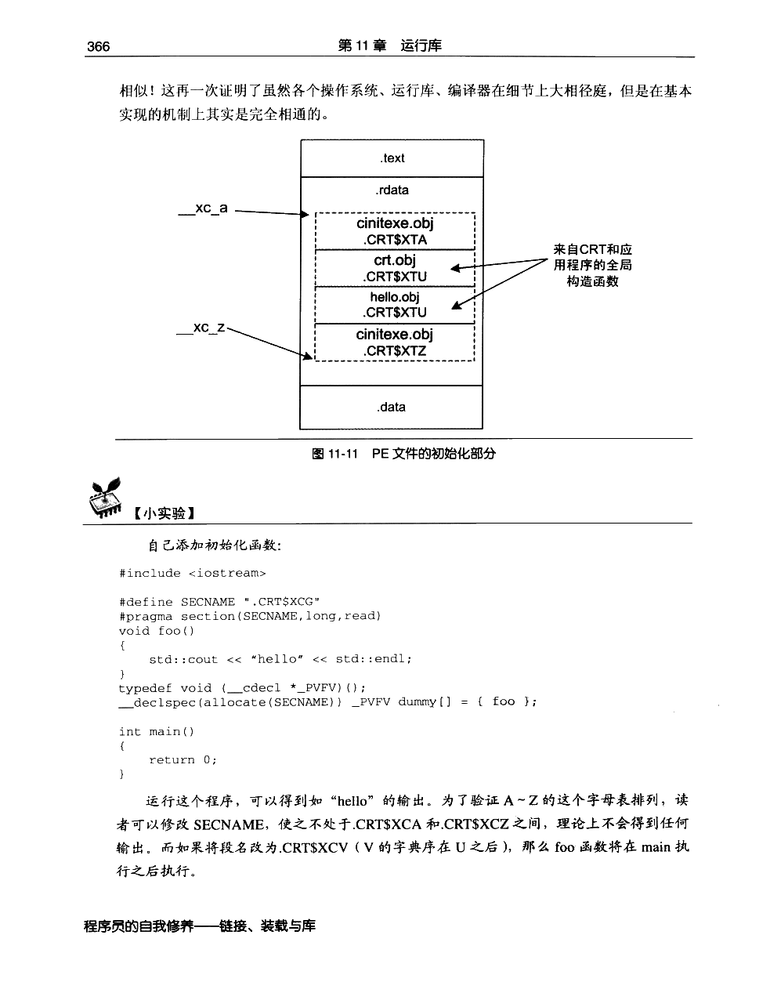
PDF 第 390 页 · 书内第 367 页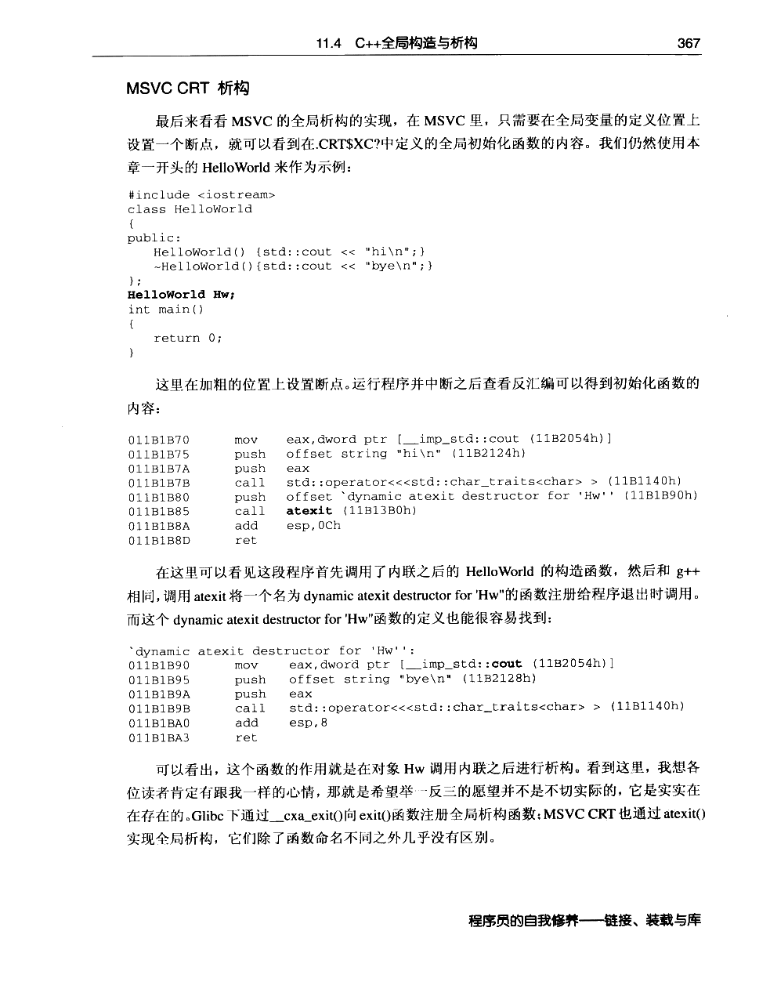